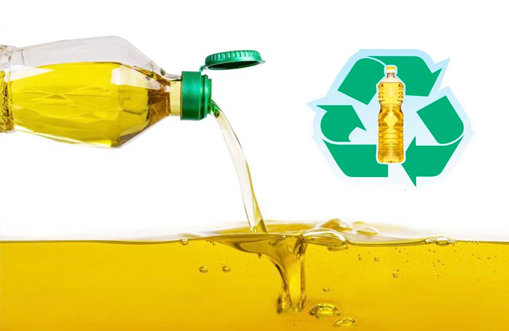
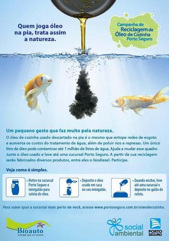

Descarte de oleo?
O melhor jeito de armazenar óleos e gorduras usados é mesmo em garrafas pet. Além de não descartar o óleo também não se descarta a própria embalagem pet. Mas nada de jogar essa garrafa no lixo comum. A destinação correta é a reciclagem.
Consequências do descarte feito de maneira incorreta
O óleo de cozinha é altamente poluente e seu descarte incorreto é capaz de gerar uma série de malefícios ao meio ambiente, como a impermeabilização e a contaminação do solo, entupimento de redes de esgoto e poluição dos lençóis freáticos.
O oléo e prejudicial ao ambiente?
Devido às substâncias insolúveis em água (os chamados lipídeos) presentes em sua composição, quando descartados de maneira irregular, os óleos podem obstruir tubos e encanamentos, provocar o refluxo de esgoto, ou ainda poluir os corpos hídricos e afetar significativamente a vida aquática.
Como descartar de maneira correta?
Ele deve ser armazenado em um recipiente com tampa. Você pode optar por uma garrafa PET ou uma embalagem de vidro. Outra questão que pode surgir é onde descartar óleo de cozinha usado. Quando não mais servir para cozinhar, o destino deve ser a coleta seletiva do seu município.